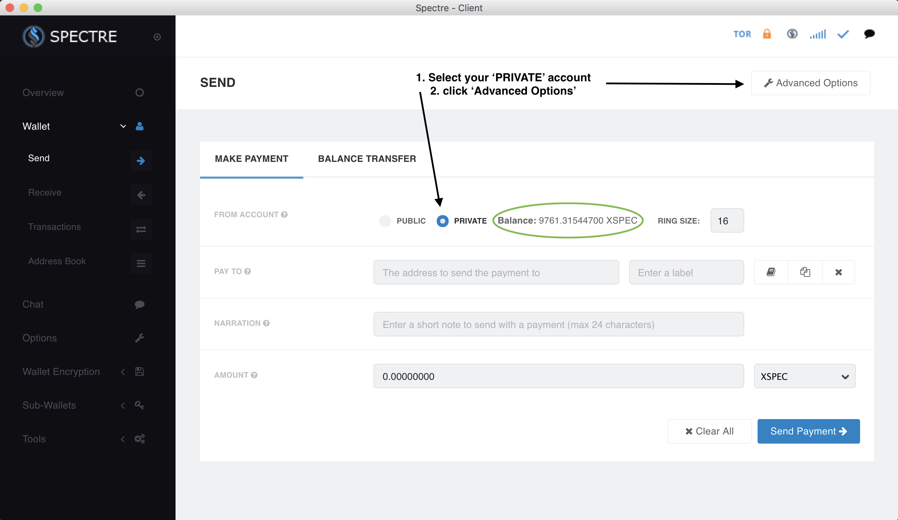
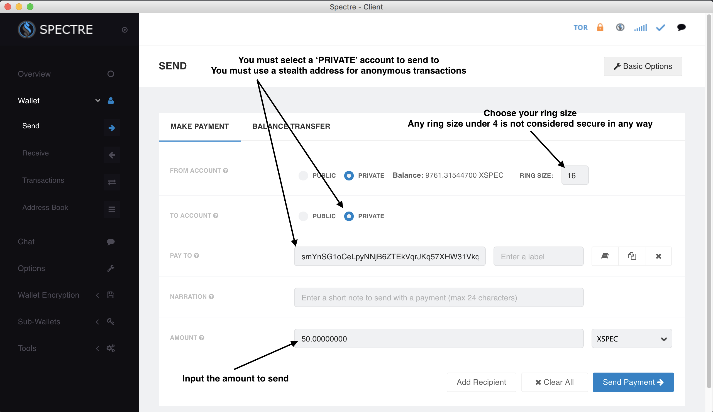
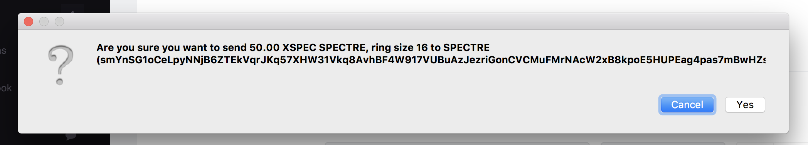
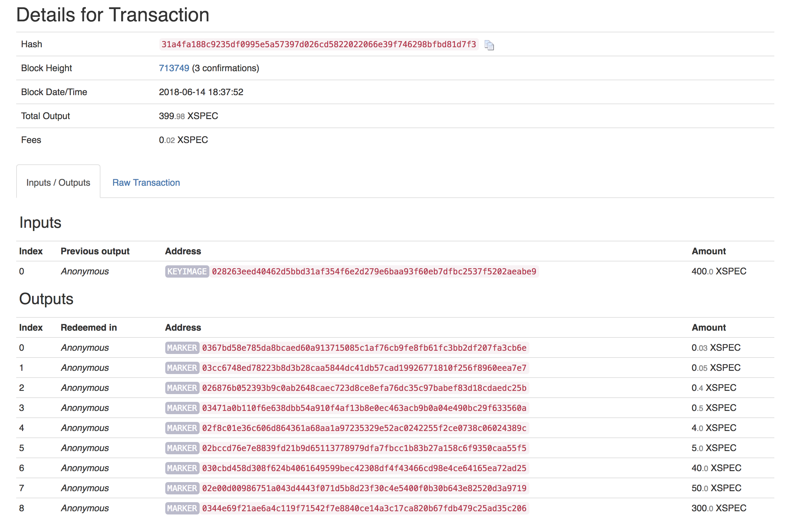

How to transact Anonymously with SpectreCoin
We need to highlight the fact that Spectre actually has the ability to let it’s users conduct anonymous-transactions on the blockchain, TODAY. For some strange reason this aspect of Spectre has been somewhat forgotten, but it is at the heart of what we are trying to achieve and at the heart of our philosophy. We have been hard at work to study and document the way in which Spectre achieves anonymous-transactions and we have done extensive testing and we have identified the code and principles used. Below is a detailed description of how to use anonymous transactions and we suggest that you use it as much as possible. The more we use this system the more secure it becomes and the less likely it will be that transactions can be linked.
4 Types of Transactions
The Spectre software allows 4 different types of transactions and it is important to understand the difference between those. We need to remind you that the network has two coins, ‘normal‘ XSPEC, much like Bitcoin and associated with ‘normal‘ UTXOs and where transactions can be linked to each other. Then we have the anonymous SPECTRE, a different type of coin that can only be spent using ring signatures and where transactions cannot be linked and where the sender / receiver cannot be determined. We are in the process of updating the graphics in the wallet to make this clearer.
XSPEC > XSPEC : These are ‘normal‘ transactions, much like Bitcoin, where the transaction is visible on the blockchain and can be traced from sender to receiver by the public keys but not to your real life identify or IP address. You can send XSPEC to a ‘normal‘ address or a stealth address. The stealth address in this case will act to generate a new ‘normal‘ address every-time.
XSPEC > SPECTRE : These transactions create anonymous SPECTRE coins that can subsequently be used for anonymous transactions. The balance of SPECTRE coins will show in your ‘PRIVATE’ balance.
SPECTRE > SPECTRE : These are fully anonymous transactions using ring signatures and these transactions sends SPECTRE from a ‘PRIVATE’ balance to another ‘PRIVATE’ balance using a stealth address only! The minimum ring size for all transactions can now be set at 8 and that ensures very good privacy.
SPECTRE > XSPEC : These transactions generate XSPEC from SPECTRE and spends anonymous outputs to generate new coins. These newly generated XSPEC has no transaction history.
How to conduct an anonymous transaction
As mentioned above, an anonymous transaction is created when you send an amount of SPECTRE from your ‘PRIVATE’ balance to another ‘PRIVATE’ balance using a Stealth Address. In these types of transactions anonymous coins are sent using ring signatures and there is no way to link the sender to the receiver or what exact amount is being sent (in most cases). This guide has been written for the most recent version of the wallet available from GitHub.
To initiate an anonymous transaction you need to select your ‘PRIVATE’ balance & click ‘Advanced Options‘. Note your private balance available for anonymous transactions.
Firstly, go to you ‘Send‘ tab and select ‘PRIVATE‘ as the source of your funds (if you don’t have any coins in your private balance then use the ‘BALANCE TRANSFER‘ tab to transfer some coins into your private balance.) You then need to select ‘Advanced Options‘ to open additional options and make sure that you send to another ‘PRIVATE‘ account. See below:
Select ‘PRIVATE’ to ‘PRIVATE’, select ring size (16 is the default and fine in most cases), enter the receiver stealth address and the amount to send. Click send payment and enter password when asked to confirm.
How do you choose your ring size? The default is set to 16 which will make transactions very secure and un-linkable. The higher the ring size the more secure your transaction will be, but we have set the maximum to 32. The first way to determine the possible ring size for a transaction input is to have a look at the ‘Chain Data‘ tab in your wallet. On the left you will find all the different denominations of anonymous SPECTRE on the blockchain. The first column shows the denomination, and you can see how many of that particular denomination you own (that you can spend) in the second column. The third column shows how many SPECTRE of that particular denomination exists on the blockchain and the value in parenthesis, for value “0.05” this is 183, is what is known as ‘mature‘ inputs. That basically means that there are 183 value “0.05” SPECTRE that can be used in the ring signature. You can also obtain this information by using the ‘anoninfo‘ function in the console. If you are trying to spend an anonymous output with less ‘mature’ coins than the ring size you will get an error. Most denominations will support a minimum ring size of 16.

Once you you then click ‘Send Payment‘ you get a dialog to confirm the payment
Confirm the transaction
Here you can see the transaction above on the Spectre blockchain explorer:
50 SPECTRE anonymous transaction
The ‘picking algorithm‘ chose an input of value “400” and split it down into smaller denominations:
In this case an observer can not determine which output is actually being spent and does not know therefore that 50 SPECTRE was sent to the receiver.
Stealth addresses protect the recipient’s privacy.
Ring Signatures protect the sender’s privacy.